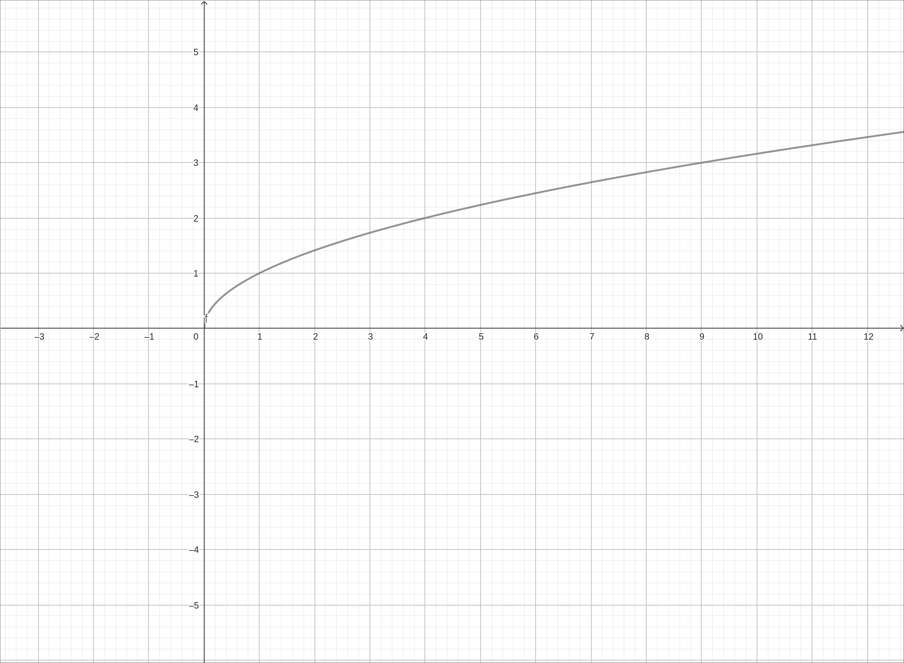
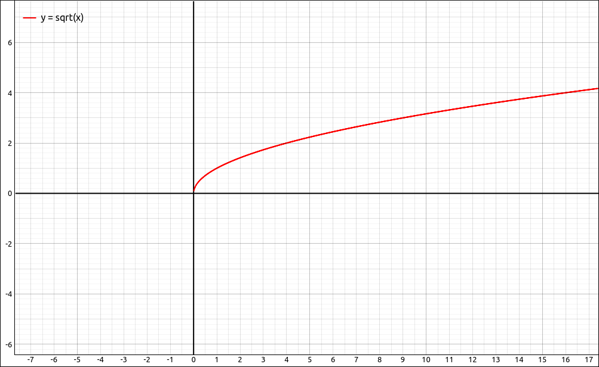
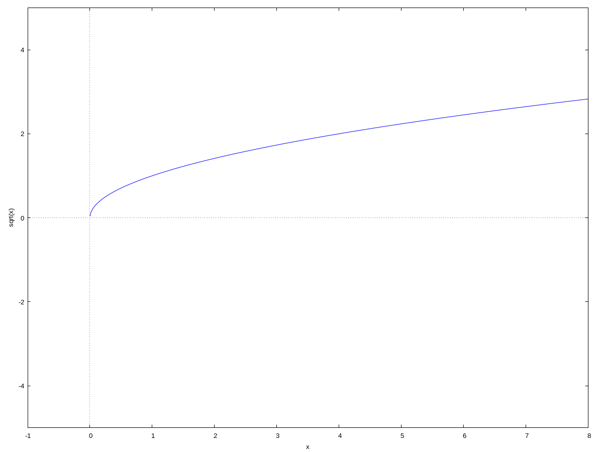
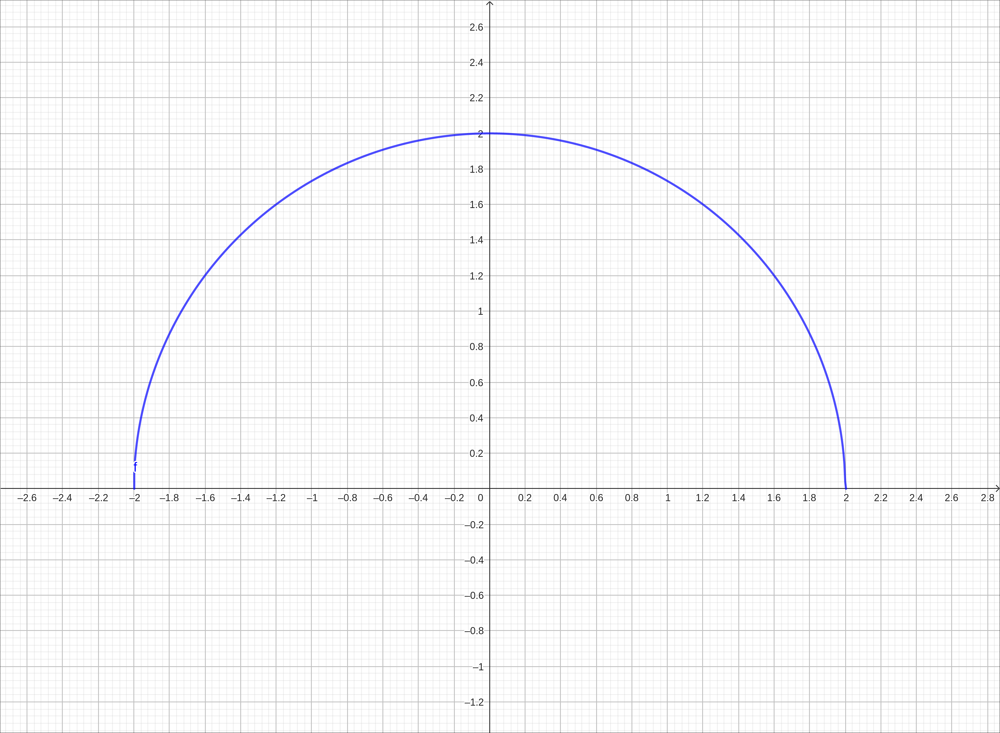
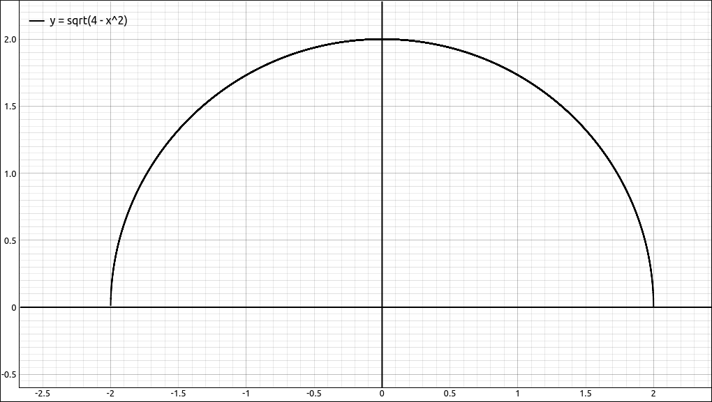
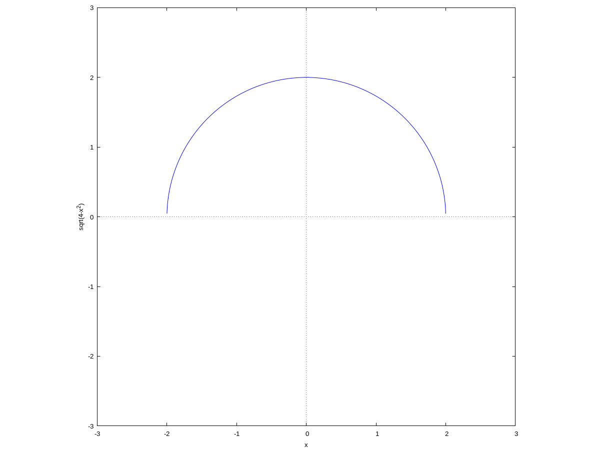

One-Sided Continuity#
Discussion & Definitions#
The only difference between one-sided continuity and continuity is that instead of the criteria that a two-sided limit exists we are only concerned with a one-sided limit. We recap the definition of continuity, which you can consider two-sided continuity, from the last section.
Definition: Continuous at a Point
A function \(f(x)\) is continuous at a point a if and only if the following three conditions are satisfied:
\(f(a)\) is defined.
\(\displaystyle \lim_{x \to a} f(x)\) exists
\(\displaystyle \lim_{x \to a} f(x) = f(a)\)
For the definitions of one-sided continuity we simply change the two-sided limit into a one-sided limit.
Definition: Continuous From the Left at a Point
A function \(f(x)\) is continuous from the left at a point a if and only if the following three conditions are satisfied:
\(f(a)\) is defined.
\(\displaystyle \lim_{x \to a^-} f(x)\) exists
\(\displaystyle \lim_{x \to a^-} f(x) = f(a)\)
Definition: Continuous From the Right at a Point
A function \(f(x)\) is continuous from the right at a point a if and only if the following three conditions are satisfied:
\(f(a)\) is defined.
\(\displaystyle \lim_{x \to a^+} f(x)\) exists
\(\displaystyle \lim_{x \to a^+} f(x) = f(a)\)
Example: \(f(x) = \sqrt{x}\)#
GeoGebra#
Input the function with either,
sqrt(x)
or
x^(1/2)
The graph of the function is shown below.

\(f(x) = \sqrt{x}\)#
The function is clearly not defined for \(x < 0\), at least not in the real number system. It is possible that this function is continuous from the right at \(x = 0\), and it is. We will verify this algebraically.
Although we can do this in our heads we can also use GeoGebra to evaluate f(0) and the result is 0. So the first criteria is satisfied.
Taking the right hand limit, LimitAbove in GeoGebra we get the result of 0. Recall that you select a new cell and type in limit, select LimitAbove, put in f as the function and 0 as the limit point and GeoGebra returns 0.
This verifies that \(f(x) = \sqrt{x}\) is continuous from the right at \(x = 0\).
CLAE#
Input the function with either,
sqrt(x)
or
x^(1/2)
The graph of the function is shown below.

\(f(x) = \sqrt{x}\)#
The function is clearly not defined for \(x < 0\), at least not in the real number system. It is possible that this function is continuous from the right at \(x = 0\), and it is. We will verify this algebraically.
Although we can do this in our heads we can also use CLAE to evaluate f(0) and the result is 0. So the first criteria is satisfied.
Taking the right hand limit, CLAE gives the result of 0. Recall that you select the function, select Calculus > Limit, variable x, limit point 0, and direction is Right.
This verifies that \(f(x) = \sqrt{x}\) is continuous from the right at \(x = 0\).
Maxima#
Input the function with either,
kill(all);
f(x):=sqrt(x)
or
kill(all);
f(x):=x^(1/2)
The graph of the function is shown below.
wxplot2d([f(x)], [x,-1,8], [y,-5,5])

\(f(x) = \sqrt{x}\)#
The function is clearly not defined for \(x < 0\), at least not in the real number system. It is possible that this function is continuous from the right at \(x = 0\), and it is. We will verify this algebraically.
Although we can do this in our heads we can also use Maxima to evaluate f(0) and the result is 0. So the first criteria is satisfied.
Taking the right hand limit,
limit(f(x),x,0,plus)
Maxima gives the result of 0.
This verifies that \(f(x) = \sqrt{x}\) is continuous from the right at \(x = 0\).
Example: \(f(x) = \sqrt{4-x^2}\)#
GeoGebra#
Input the function with either,
sqrt(4-x^2)
or
(4-x^2)^(1/2)
The graph of the function is shown below.

\(f(x) = \sqrt{4-x^2}\)#
From what we know about root functions we know that the domain of this function is \([-2, 2]\). This function is continuous from the right at \(x = -2\) and continuous from the left at \(x = -2\). We will verify these claims.
Starting with continuity from the right at \(x = -2\). Evaluate f(-2) and you should get 0. Now do the LimitAbove command of f at \(x = -2\) and you will also get 0. This verifies that the function is continuous from the right at \(x = -2\).
Moving on to continuity from the left at \(x = 2\). Evaluate f(2) and you should get 0. Now do the LimitBelow command of f at \(x = 2\) and you will also get 0. This verifies that the function is continuous from the left at \(x = 2\).
CLAE#
Input the function with either,
sqrt(4-x^2)
or
(4-x^2)^(1/2)
The graph of the function is shown below.

\(f(x) = \sqrt{4-x^2}\)#
From what we know about root functions we know that the domain of this function is \([-2, 2]\). This function is continuous from the right at \(x = -2\) and continuous from the left at \(x = -2\). We will verify these claims.
Starting with continuity from the right at \(x = -2\). Evaluate the function at \(-2\) and you should get 0. Now do the right hand limit of f at \(x = -2\) and you will also get 0. This verifies that the function is continuous from the right at \(x = -2\).
Moving on to continuity from the left at \(x = 2\). Evaluate the function at 2 and you should get 0. Now do the left hand limit of f at \(x = 2\) and you will also get 0. This verifies that the function is continuous from the left at \(x = 2\).
Maxima#
Input the function with either,
kill(all);
f(x):=sqrt(4-x^2)
or
kill(all);
f(x):=(4-x^2)^(1/2)
The graph of the function is shown below.

\(f(x) = \sqrt{4-x^2}\)#
From what we know about root functions we know that the domain of this function is \([-2, 2]\). This function is continuous from the right at \(x = -2\) and continuous from the left at \(x = -2\). We will verify these claims.
Starting with continuity from the right at \(x = -2\). Evaluate``f(-2)```` and you should get 0. Now do the right hand limit of f at \(x = -2\)
limit(f(x),x,-2,plus)
and you will also get 0. This verifies that the function is continuous from the right at \(x = -2\).
Moving on to continuity from the left at \(x = 2\). Evaluate f(2) and you should get 0. Now do the left hand limit of f at \(x = 2\)
limit(f(x),x,2,minus)
and you will also get 0. This verifies that the function is continuous from the left at \(x = 2\).